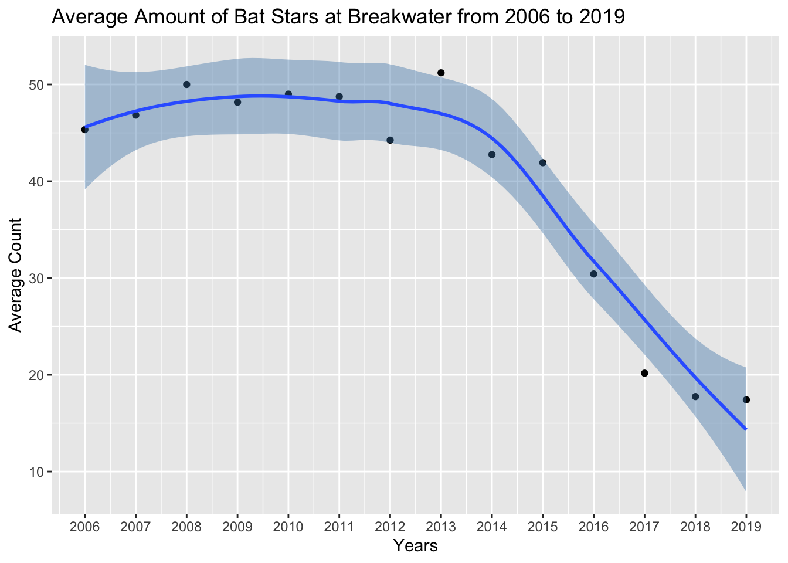
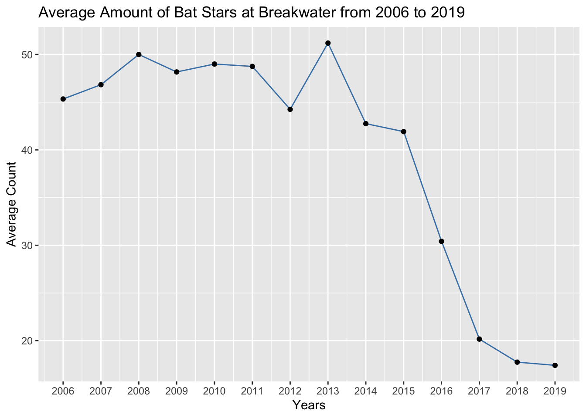
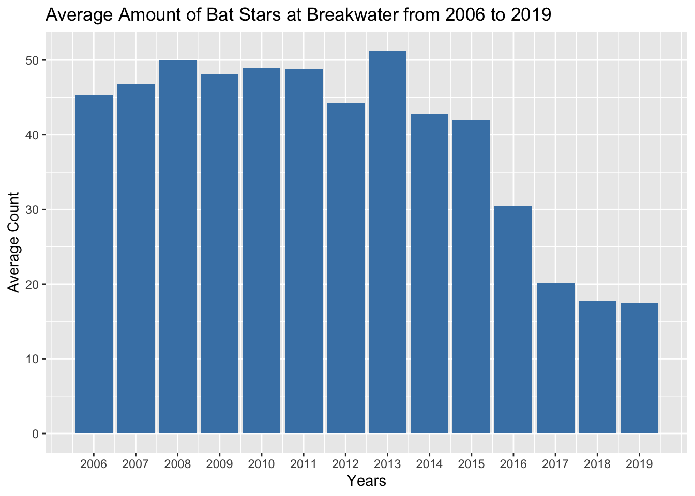
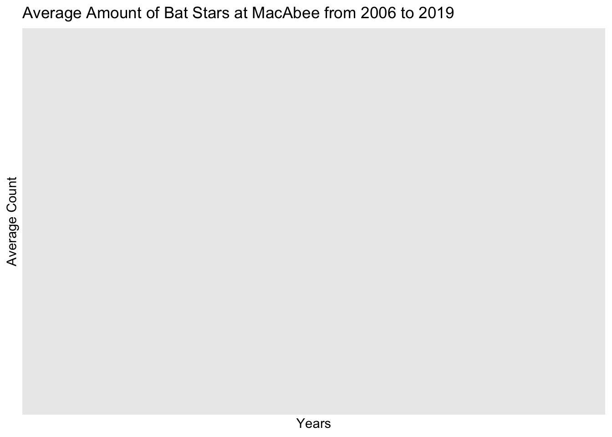
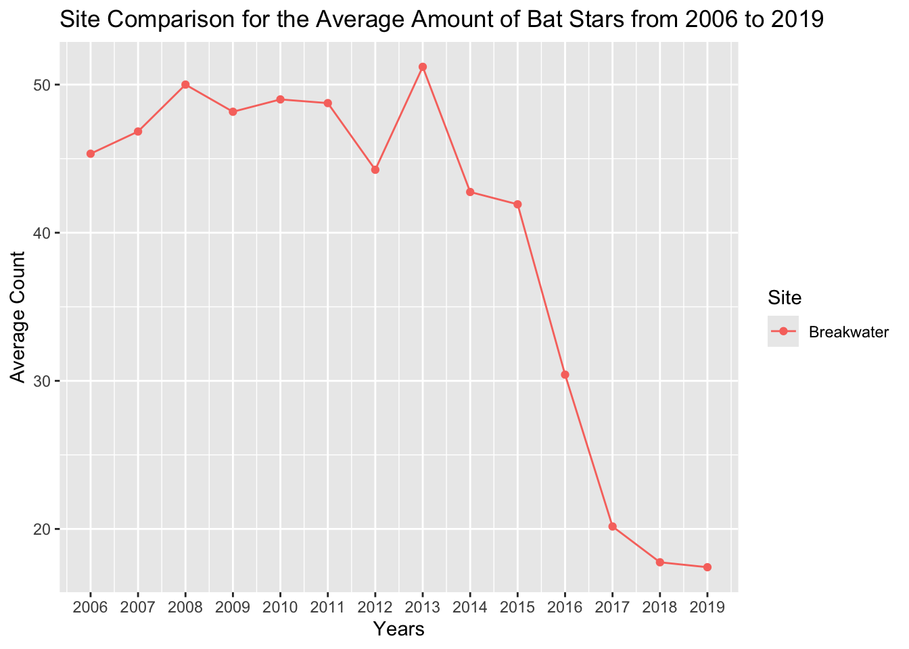
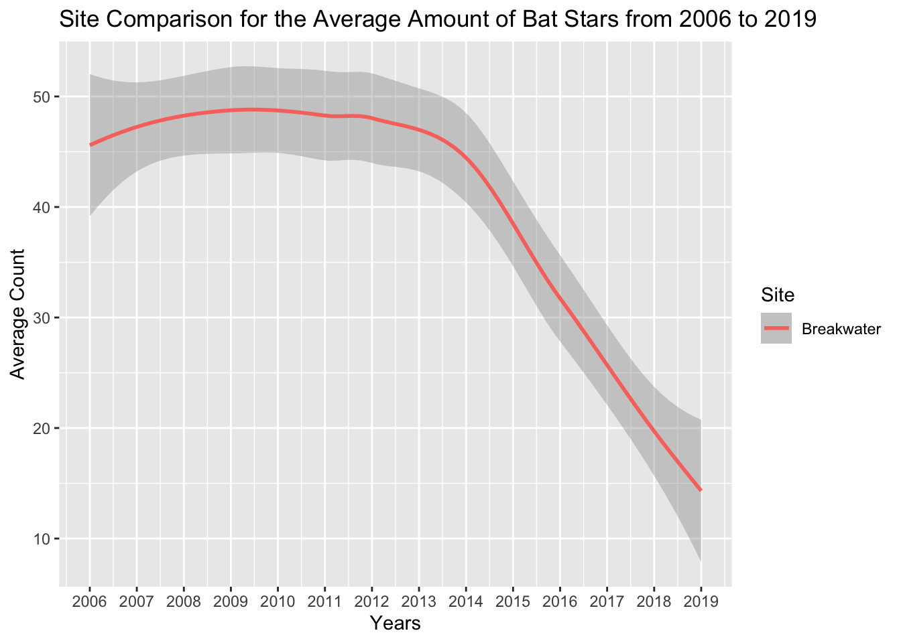
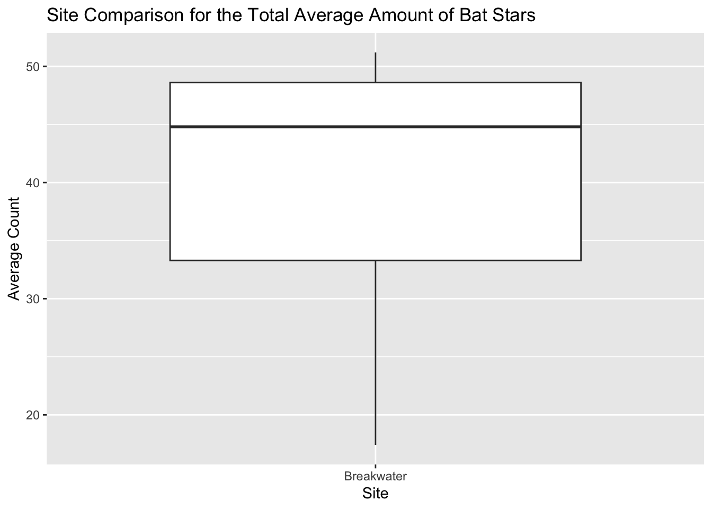

# Loading packages
library(tidyverse)
library(stringr)
library(lubridate)
library(readr)Project Part 2: Data Cleaning and Rough Draft
Part 1 - Data Load and Cleaning
**NOTE: My previous proposal on working with abalone data counts has changed due to there being no data available for abalones. I will now be working with Bat Star counts from two different sites (beaches) in Monterey and comparing their counts from 2006 to 2019.
1. Load the appropriate R packages for analysis
2. Load the appropriate R packages for analysis
# Load in the data
rcca_data <- read_csv("~/Documents/STATS_210_Spring_25/Project/project_part2/data-raw/RCCA_invertebrate_swath_data.csv", show_col_types = FALSE)
# View data
view(rcca_data)3. Explore dataset
dim(rcca_data)[1] 185318 14summary(rcca_data) Site Day Month Year
Length:185318 Min. : 1.00 Min. : 1.000 Min. :2006
Class :character 1st Qu.: 9.00 1st Qu.: 7.000 1st Qu.:2010
Mode :character Median :16.00 Median : 8.000 Median :2014
Mean :16.04 Mean : 8.221 Mean :2014
3rd Qu.:23.00 3rd Qu.:10.000 3rd Qu.:2017
Max. :31.00 Max. :12.000 Max. :2019
SurveyDate Transect Classcode Amount
Length:185318 Min. :1.0 Length:185318 Min. : 0.000
Class :character 1st Qu.:2.0 Class :character 1st Qu.: 0.000
Mode :character Median :3.0 Mode :character Median : 0.000
Mean :3.5 Mean : 3.361
3rd Qu.:5.0 3rd Qu.: 0.000
Max. :6.0 Max. :2409.000
NA's :563
Distance Latitude Longitude Depth_ft
Min. : 1.00 Min. :32.69 Min. :-124.3 Min. : 5.00
1st Qu.:30.00 1st Qu.:33.74 1st Qu.:-121.9 1st Qu.:22.00
Median :30.00 Median :35.24 Median :-120.9 Median :29.50
Mean :29.53 Mean :35.51 Mean :-120.5 Mean :30.35
3rd Qu.:30.00 3rd Qu.:36.62 3rd Qu.:-118.4 3rd Qu.:37.50
Max. :30.00 Max. :42.05 Max. :-117.3 Max. :69.00
NA's :501 NA's :6742
Temp10m Visibility
Min. : 7.00 Min. : 0.000
1st Qu.:11.00 1st Qu.: 4.000
Median :13.00 Median : 5.000
Mean :13.78 Mean : 5.953
3rd Qu.:17.00 3rd Qu.: 7.000
Max. :23.00 Max. :40.000
NA's :55622 NA's :8155 4. Clean dataset
seastar <- rcca_data |>
filter(str_detect(Classcode, "star")) |>
arrange(Year)
seastar# A tibble: 27,883 × 14
Site Day Month Year SurveyDate Transect Classcode Amount Distance
<chr> <dbl> <dbl> <dbl> <chr> <dbl> <chr> <dbl> <dbl>
1 120 Reef 8 10 2006 8-Oct-06 1 bat star 13 30
2 120 Reef 8 10 2006 8-Oct-06 1 giant spined … 15 30
3 120 Reef 8 10 2006 8-Oct-06 1 short spined … 0 30
4 120 Reef 8 10 2006 8-Oct-06 1 sunflower/sun… 0 30
5 120 Reef 8 10 2006 8-Oct-06 2 bat star 5 30
6 120 Reef 8 10 2006 8-Oct-06 2 giant spined … 19 30
7 120 Reef 8 10 2006 8-Oct-06 2 short spined … 0 30
8 120 Reef 8 10 2006 8-Oct-06 2 sunflower/sun… 0 30
9 120 Reef 8 10 2006 8-Oct-06 3 bat star 9 30
10 120 Reef 8 10 2006 8-Oct-06 3 giant spined … 12 30
# ℹ 27,873 more rows
# ℹ 5 more variables: Latitude <dbl>, Longitude <dbl>, Depth_ft <dbl>,
# Temp10m <dbl>, Visibility <dbl>batstar <- seastar |>
filter(Classcode == "bat star") |>
arrange(Year)
batstar# A tibble: 6,499 × 14
Site Day Month Year SurveyDate Transect Classcode Amount Distance
<chr> <dbl> <dbl> <dbl> <chr> <dbl> <chr> <dbl> <dbl>
1 120 Reef 8 10 2006 8-Oct-06 1 bat star 13 30
2 120 Reef 8 10 2006 8-Oct-06 2 bat star 5 30
3 120 Reef 8 10 2006 8-Oct-06 3 bat star 9 30
4 120 Reef 8 10 2006 8-Oct-06 4 bat star 6 30
5 120 Reef 8 10 2006 8-Oct-06 5 bat star 2 30
6 120 Reef 8 10 2006 8-Oct-06 6 bat star 0 30
7 Breakwater 12 10 2006 12-Oct-06 1 bat star 50 5
8 Breakwater 12 10 2006 12-Oct-06 2 bat star 50 28
9 Breakwater 12 10 2006 12-Oct-06 3 bat star 20 4
10 Breakwater 12 10 2006 12-Oct-06 4 bat star 50 15
# ℹ 6,489 more rows
# ℹ 5 more variables: Latitude <dbl>, Longitude <dbl>, Depth_ft <dbl>,
# Temp10m <dbl>, Visibility <dbl># Original data saved
write.csv(batstar,
"~/Documents/STATS_210_Spring_25/Project/project_part2/data-raw/batstar.csv",
row.names = FALSE)batstar_bw <- batstar |>
select(Site, Year, SurveyDate, Classcode, Amount) |>
filter(Site == "Breakwater")
batstar_bw# A tibble: 162 × 5
Site Year SurveyDate Classcode Amount
<chr> <dbl> <chr> <chr> <dbl>
1 Breakwater 2006 12-Oct-06 bat star 50
2 Breakwater 2006 12-Oct-06 bat star 50
3 Breakwater 2006 12-Oct-06 bat star 20
4 Breakwater 2006 12-Oct-06 bat star 50
5 Breakwater 2006 12-Oct-06 bat star 50
6 Breakwater 2006 12-Oct-06 bat star 52
7 Breakwater 2007 6-Jul-07 bat star 50
8 Breakwater 2007 6-Jul-07 bat star 50
9 Breakwater 2007 6-Jul-07 bat star 64
10 Breakwater 2007 6-Jul-07 bat star 50
# ℹ 152 more rowsbatstar_bwAvg <- batstar_bw |>
group_by(Site, Year) |>
summarise(AverageAmount = mean(Amount, na.rm = TRUE), .groups = "drop")
# View the summarized data
batstar_bwAvg# A tibble: 14 × 3
Site Year AverageAmount
<chr> <dbl> <dbl>
1 Breakwater 2006 45.3
2 Breakwater 2007 46.8
3 Breakwater 2008 50
4 Breakwater 2009 48.2
5 Breakwater 2010 49
6 Breakwater 2011 48.8
7 Breakwater 2012 44.2
8 Breakwater 2013 51.2
9 Breakwater 2014 42.8
10 Breakwater 2015 41.9
11 Breakwater 2016 30.4
12 Breakwater 2017 20.2
13 Breakwater 2018 17.8
14 Breakwater 2019 17.4batstar_mb <- batstar |>
select(Site, Year, SurveyDate, Classcode, Amount) |>
filter(Site == "MacAbee")
batstar_mb# A tibble: 96 × 5
Site Year SurveyDate Classcode Amount
<chr> <dbl> <chr> <chr> <dbl>
1 MacAbee 2006 25-Aug-06 bat star 50
2 MacAbee 2006 25-Aug-06 bat star 50
3 MacAbee 2006 25-Aug-06 bat star 50
4 MacAbee 2006 25-Aug-06 bat star 23
5 MacAbee 2006 25-Aug-06 bat star 41
6 MacAbee 2006 25-Aug-06 bat star 24
7 MacAbee 2007 29-Sep-07 bat star 50
8 MacAbee 2007 29-Sep-07 bat star 11
9 MacAbee 2007 29-Sep-07 bat star 50
10 MacAbee 2007 29-Sep-07 bat star 39
# ℹ 86 more rowsbatstar_mbAvg <- batstar_mb |>
group_by(Site, Year) |>
summarise(AverageAmount = mean(Amount, na.rm = TRUE), .groups = "drop")
# View the summarized data
batstar_mbAvg# A tibble: 14 × 3
Site Year AverageAmount
<chr> <dbl> <dbl>
1 MacAbee 2006 39.7
2 MacAbee 2007 35.5
3 MacAbee 2008 50
4 MacAbee 2009 46.5
5 MacAbee 2010 55.2
6 MacAbee 2011 49.2
7 MacAbee 2012 43
8 MacAbee 2013 47.2
9 MacAbee 2014 31.5
10 MacAbee 2015 22.1
11 MacAbee 2016 26.2
12 MacAbee 2017 22
13 MacAbee 2018 12
14 MacAbee 2019 14 batstar_all <- bind_rows(batstar_bwAvg, batstar_mbAvg) |>
arrange(Year)
batstar_all# A tibble: 28 × 3
Site Year AverageAmount
<chr> <dbl> <dbl>
1 Breakwater 2006 45.3
2 MacAbee 2006 39.7
3 Breakwater 2007 46.8
4 MacAbee 2007 35.5
5 Breakwater 2008 50
6 MacAbee 2008 50
7 Breakwater 2009 48.2
8 MacAbee 2009 46.5
9 Breakwater 2010 49
10 MacAbee 2010 55.2
# ℹ 18 more rows# Clean data set number 1:
batstar_bwAvg# A tibble: 14 × 3
Site Year AverageAmount
<chr> <dbl> <dbl>
1 Breakwater 2006 45.3
2 Breakwater 2007 46.8
3 Breakwater 2008 50
4 Breakwater 2009 48.2
5 Breakwater 2010 49
6 Breakwater 2011 48.8
7 Breakwater 2012 44.2
8 Breakwater 2013 51.2
9 Breakwater 2014 42.8
10 Breakwater 2015 41.9
11 Breakwater 2016 30.4
12 Breakwater 2017 20.2
13 Breakwater 2018 17.8
14 Breakwater 2019 17.4# Clean data set number 2:
batstar_mbAvg# A tibble: 14 × 3
Site Year AverageAmount
<chr> <dbl> <dbl>
1 MacAbee 2006 39.7
2 MacAbee 2007 35.5
3 MacAbee 2008 50
4 MacAbee 2009 46.5
5 MacAbee 2010 55.2
6 MacAbee 2011 49.2
7 MacAbee 2012 43
8 MacAbee 2013 47.2
9 MacAbee 2014 31.5
10 MacAbee 2015 22.1
11 MacAbee 2016 26.2
12 MacAbee 2017 22
13 MacAbee 2018 12
14 MacAbee 2019 14 # Clean data set number 1:
batstar_all# A tibble: 28 × 3
Site Year AverageAmount
<chr> <dbl> <dbl>
1 Breakwater 2006 45.3
2 MacAbee 2006 39.7
3 Breakwater 2007 46.8
4 MacAbee 2007 35.5
5 Breakwater 2008 50
6 MacAbee 2008 50
7 Breakwater 2009 48.2
8 MacAbee 2009 46.5
9 Breakwater 2010 49
10 MacAbee 2010 55.2
# ℹ 18 more rows# Data set number 1:
write.csv(batstar_bwAvg,
"~/Documents/STATS_210_Spring_25/Project/project_part2/data-clean/batstar_bwAvg.csv",
row.names = FALSE)
# Data set number 2:
write.csv(batstar_bwAvg,
"~/Documents/STATS_210_Spring_25/Project/project_part2/data-clean/batstar_mbAvg.csv",
row.names = FALSE)
# Data set number 3:
write.csv(batstar_bwAvg,
"~/Documents/STATS_210_Spring_25/Project/project_part2/data-clean/batstar_all.csv",
row.names = FALSE)Part 2 - Data Visualizations
Graphs for Bat Star count at Breakwater
# Graph One
batstar_bwAvg |> ggplot(aes(x = Year, y = AverageAmount)) +
geom_point() +
geom_smooth(fill = "steelblue") +
labs(x = "Years",
y = "Average Count",
title = "Average Amount of Bat Stars at Breakwater from 2006 to 2019") +
scale_x_continuous(breaks = seq(min(2006), max(2019), by = 1))
# Graph Two
batstar_bwAvg |> ggplot(aes(x = Year, y = AverageAmount)) +
geom_line(color = "steelblue") +
geom_point() +
labs(x = "Years",
y = "Average Count",
title = "Average Amount of Bat Stars at Breakwater from 2006 to 2019") +
scale_x_continuous(breaks = seq(min(2006), max(2019), by = 1))
# Graph Three
batstar_bwAvg |> ggplot(aes(x = Year, y = AverageAmount)) +
geom_col(fill = "steelblue") +
labs(x = "Years",
y = "Average Count",
title = "Average Amount of Bat Stars at Breakwater from 2006 to 2019") +
scale_x_continuous(breaks = seq(min(2006), max(2019), by = 1)) +
scale_y_continuous(breaks = seq(min(0), max(100), by = 10))
Graphs for Bat Star count at MacAbee
# Graph One
batstar_mbAvg |> ggplot(aes(x = Year, y = AverageAmount)) +
geom_point() +
geom_smooth(fill = "aquamarine4") +
labs(x = "Years",
y = "Average Count",
title = "Average Amount of Bat Stars at MacAbee from 2006 to 2019") +
scale_x_continuous(breaks = seq(min(2006), max(2019), by = 1))
# Graph Two
batstar_mbAvg |> ggplot(aes(x = Year, y = AverageAmount)) +
geom_line(color = "aquamarine4") +
geom_point() +
labs(x = "Years",
y = "Average Count",
title = "Average Amount of Bat Stars at MacAbee from 2006 to 2019") +
scale_x_continuous(breaks = seq(min(2006), max(2019), by = 1))
# Graph Three
batstar_mbAvg |> ggplot(aes(x = Year, y = AverageAmount)) +
geom_col(fill = "aquamarine4") +
labs(x = "Years",
y = "Average Count",
title = "Average Amount of Bat Stars at MacAbee from 2006 to 2019") +
scale_x_continuous(breaks = seq(min(2006), max(2019), by = 1)) +
scale_y_continuous(breaks = seq(min(0), max(100), by = 10))Graphs for Bat Star count for both sites
# Graph One
batstar_all |> ggplot(aes(x = Year, y = AverageAmount, color = Site)) +
geom_line() +
geom_point() +
labs(x = "Years",
y = "Average Count",
title = "Site Comparison for the Average Amount of Bat Stars from 2006 to 2019") +
scale_x_continuous(breaks = seq(min(2006), max(2019), by = 1))
# Graph Two
batstar_all |> ggplot() +
geom_smooth(mapping = aes(x = Year, y = AverageAmount, color = Site)) +
labs(x = "Years",
y = "Average Count",
title = "Site Comparison for the Average Amount of Bat Stars from 2006 to 2019") +
scale_x_continuous(breaks = seq(min(2006), max(2019), by = 1))
# Graph Three
ggplot(batstar_all, aes(x = Site, y = AverageAmount)) +
geom_boxplot() +
labs(x = "Site",
y = "Average Count",
title = "Site Comparison for the Total Average Amount of Bat Stars")